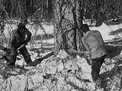
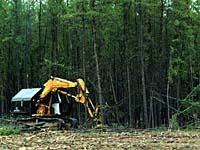
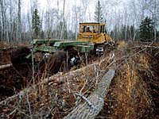
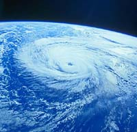

Mechanization
Aircraft
Satellites
Computers
Biotechnology
The Future
 Managing Canada's forest lands has come a long way. Men once harvested trees with axes and buck saws, and logs were hauled by horses to rivers and lakes where they would be floated to mills. |

Fires were left to burn, while insect and disease outbreaks spread unchecked. Knowledge of timber volumes and tree growth was only rudimentary, and reforestation was of little concern. |
Forest management has changed for the better. Advances in technology played a pivotal role in those changes and continue to shape forest management practices today. |

Logging was once an extremely physical job. Crosscut saws and axes were replaced by power saws and in some harvesting operations today, loggers do not even touch the ground. |
 Feller-bunchers, mechanical harvesters, skidders and slashers now harvest and process as much wood in a day as it once took one man several weeks to harvest. |
 Machines now prepare, and sometimes plant, harvested areas for forest renewal. These areas were once left to nature to regrow. Cultivators, ploughs, mounders, disc trenchers, blades, barrels and chains are examples of site preparation equipment. |
By removing debris and other vegetation competing for soil moisture and nutrients, planting becomes easier and seedlings have a better chance for survival. The result is improved tree growth. |
Timber cruisers once walked or used horses to get to remote areas to assess timber volumes and quality. Helicopters and float planes now take these workers into the most remote areas within hours. |
Aircraft are also used to take air photos of thousands of hectares of forest land, areas that would have taken months to evaluate on foot. These photos are then analyzed to provide forest management information such as tree species, volumes, heights, ages, soil types and drainage. |

Aircraft are also used in forest fire detection and suppression. They cover large areas quickly, complementing the efforts of observers in lookout towers. |

Once fires are located, water bombers, helicopters and spotter planes play a central role in bringing them under control. Aircraft transport firefighters and equipment to fires quickly, while large airtankers support ground crews with water and retardant drops. |
 Satellites are now used to produce images of immense areas of forest land. These images help interpreters locate areas needing renewal work. They show insect and disease damage, and are used in forest fire control as well. |
Satellite images can even be detailed enough to provide information on tree species, sizes, ages, distribution and volume. |
Computers have several useful applications in the forest industry. For example, in the early days, sketches of forested land were made from the open cockpits of planes. Forest-based information was then gathered from the sketches. Air photos replaced these sketches but data were still collected and computed manually. Maps were drawn by hand and information was gathered and analyzed very slowly. |
Computerized Geographic Information Systems now store the thousands of pieces of information contained on each map sheet. The use of computers include the following in the forest industry:
- Maps can be printed by computers
in a variety of scales with as much or as little detail as needed
for any given use. Computer models can predict the long term effects
of harvesting, growth rates of the managed forest, fire or insect
and disease damage on the forests of today ó and tomorrow.
- Weather data are vital in predicting
where forest fires are likely to occur. This information can be
collected hourly from approximately 30 weather stations across
Saskatchewan's northern provincial forest. The data is collected
by computer, stored and analyzed to produce daily forest fire
hazard predictions.
- Computers also record and map
lightning strikes registered by five lightning detectors. The
location of strikes combined with weather information provides
a strong indication of where lightning fires may occur.
- In tree nurseries, computers
are used to determine when seedlings should be watered and how
much water they need. Fertilizer and herbicide requirements can
be identified by computers; and greenhouse seedlings are kept
in a stable environment through constant computer monitoring.
- Computers play a key role at many wood processing plants. In sawmills, they analyze log size and shape to determine cut patterns in order to maximize lumber yields.
The term biotechnology means the application of knowledge about living things to practical purposes such as transferring genes between different species to create a transgenic species. |

Trees have individual traits and features, including shapes, sizes and growth rates, that are passed from generation to generation. Scientists manipulate these traits to increase growth rates, improve cold hardiness, disease resistance and tolerance to environmental stress. |

Trees can be grown from single cells, since all cells contain a genetic 'memory' of their parents. Using this method, superior trees can be cloned and conventional plant-breeding techniques are bypassed. |
Superior trees can also be produced through gene transfer. Biological inheritance is stored in plant genes. Through gene splicing or gene removal, whole genes or pieces of genes can be inserted into the plant's genetic structure, transferring the desired genetic information. |
Tree improvement techniques also include a more common method of crossbreeding where branches of superior trees are grafted to young seedlings. The resulting plant produces seeds with the desirable characteristics of the superior tree. Superior trees are also crossbred with each other to produce superior offspring. |

Technological advances have greatly improved the way forests are managed. In the future, forest managers will endeavor to regenerate healthier, faster growing forests. More efficient management can mean better products, enhanced forests and a secure future for the forest industry. Through careful management and the application of technology, Saskatchewan residents can continue to enjoy the benefits of the forest indefinitely. |